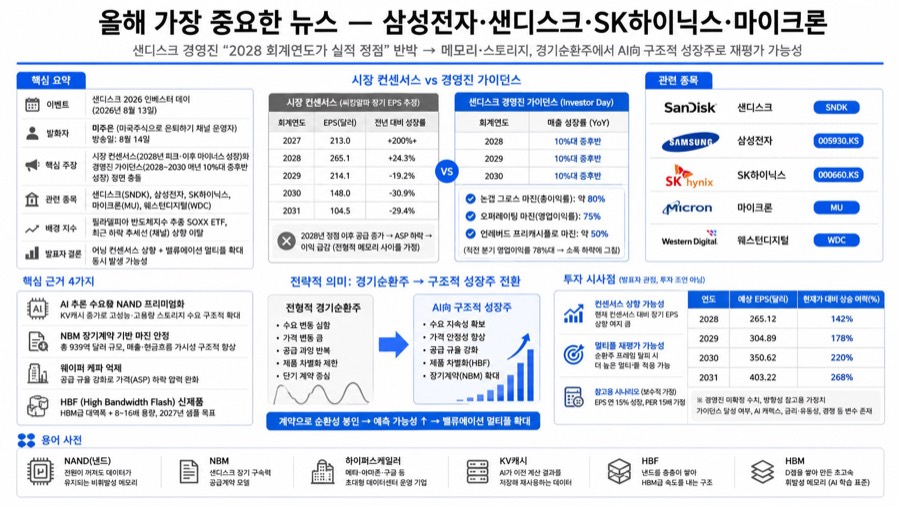
올해 가장 중요한 뉴스 — 삼성전자·샌디스크·SK하이닉스·마이크론
- 샌디스크 인베스터데이서 2028~2030년 매년 10%대 중후반 성장 제시, 시장 컨센서스와 정면충돌
- 8개 하이퍼스케일러 고객과 장기계약 939억달러 체결, 2028년 출하비트 66%가 이미 계약 확보
- 웨이퍼 케파는 2022년 대비 30% 축소 상태서 노드미세화로 연 27% 비트증가 추진
- 메모리 스토리지가 경기순환주에서 AI向 구조적 성장주로 재평가받을 가능성 제시
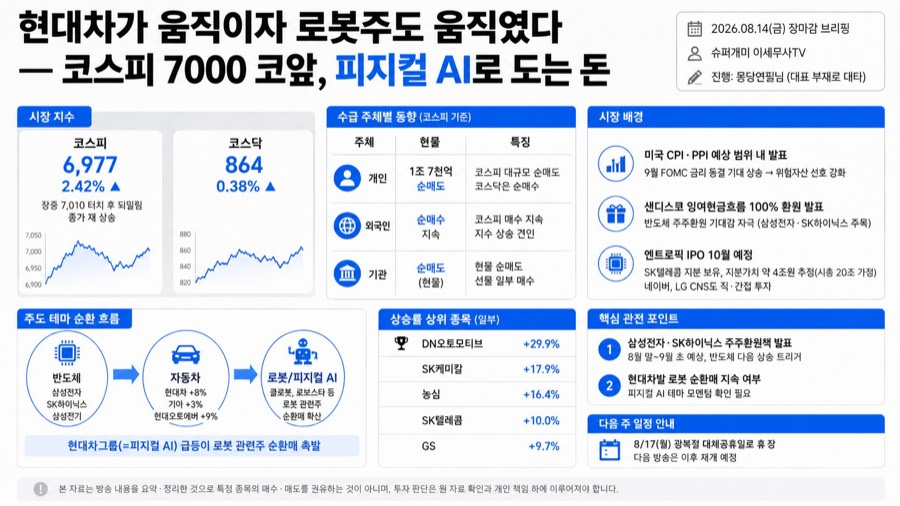
현대차가 움직이자 로봇주도 움직였다 — 코스피 7000 코앞, 피지컬 AI로 도는 돈
- 코스피 2.42% 급등해 6977 마감, 장중 7010 터치, CPI PPI 안정으로 금리동결 기대 확산
- 현대차 8% 기아 3% 현대오토에버 9% 급등하며 로봇관련주 순환매 촉발, 반도체는 숨고르기
- 다음 상승 동력은 삼성전자SK하이닉스 주주환원책 발표, 8월말~9월초 예상돼 관전포인트
- SK텔레콤 10% 급등은 앤트로픽 지분가치 재평가 기대, 10월 IPO 예상 시총 20조원 셈법 소개
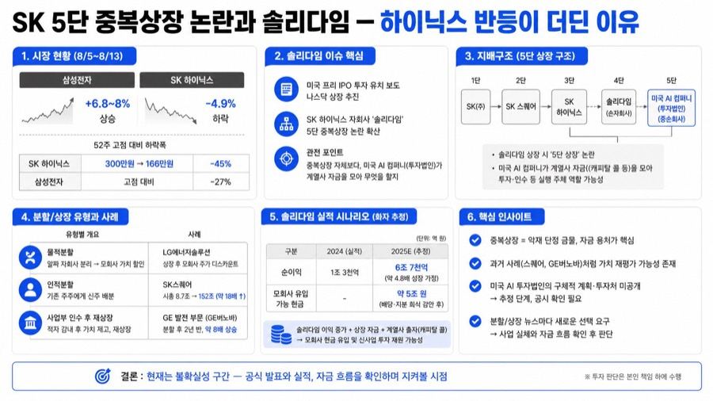
SK 5단 중복상장 논란과 솔리다임 — 하이닉스 반등이 더딘 이유
- 8월5일~13일 삼성전자 최대 8% 상승, SK하이닉스는 4.9% 하락하며 반등 강도 차이가 벌어짐
- 솔리다임 나스닥 상장 추진이 5단 중복상장 논란을 촉발, 화자는 신설 미국법인의 자금 용처가 관전포인트라 진단
- SK하이닉스는 고점 대비 약 45% 하락, 같은 기간 삼성전자는 27% 하락에 그쳐 낙폭 차이 뚜렷
- SK스퀘어 인적분할 당시 시총 8.7조서 152조로 18배 성장한 사례 들어 중복상장 비판과 주가는 별개라고 진단
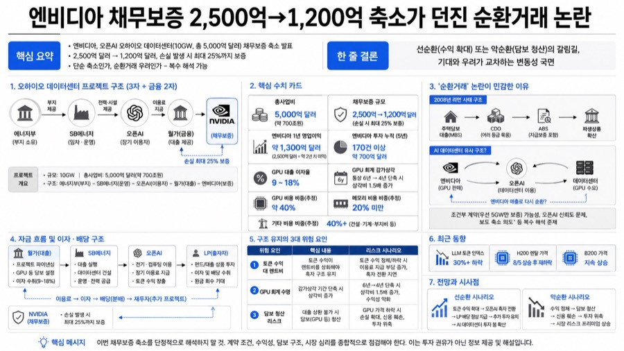
엔비디아 채무보증 2,500억→1,200억 축소가 던진 순환거래 논란
- 엔비디아가 오픈AI 오하이오 데이터센터 채무보증을 2,500억달러에서 1,200억달러로 축소 발표
- 5,000억달러 규모 사업에 월가가 대출, 손실 최대 25%를 엔비디아가 보증하는 3자 구조로 화자는 해설
- 채무보증 2,500억달러는 엔비디아 연간 영업이익 약 1,300억달러를 웃돌아, 젠슨 황도 마지막 가능성 언급
- 발표 직후 나스닥은 신고가, 다만 삼성전자 상승·SK하이닉스 하락으로 반응은 엇갈림
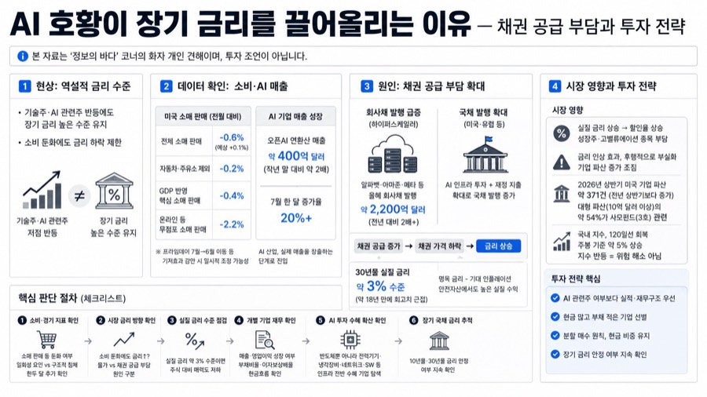
AI 호황이 장기 금리를 끌어올리는 이유 — 채권 공급 부담과 투자 전략
- 미국 소매판매가 전월대비 0.6% 감소했지만 장기금리는 오히려 높게 유지되는 역설을 화자가 짚음
- 하이퍼스케일러 회사채 발행이 올해 약 2,200억달러로 전년의 두 배, 국채 발행과 겹쳐 채권 공급 부담 커짐
- 오픈AI 연환산 매출이 약 400억달러로 작년 말 대비 두 배, AI가 실매출 산업 단계로 진입했다고 평가
- 화자는 AI 관련주라는 이유만으로 투자 말고 현금 많고 부채 적은 기업을 선별하라고 권고
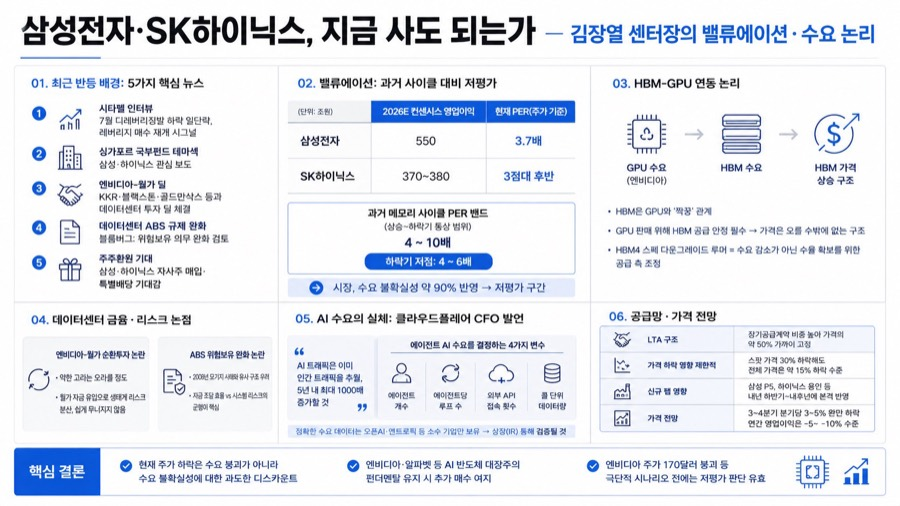
삼성전자·SK하이닉스, 지금 사도 되는가 — 김장열 센터장의 밸류에이션·수요 논리
- 삼성·하이닉스 PER 3.7배대, 과거 메모리 사이클 저점 밴드(4~6배)보다도 낮은 저평가 구간
- LTA 장기공급계약으로 가격 절반가량 고정, 스팟가 30% 하락해도 전체 15% 수준 하락 그쳐
- HBM 수요는 엔비디아 GPU 수요와 직결, 170달러 붕괴 등 극단 시나리오 아니면 저평가 유지
- 엔비디아·월가 데이터센터 딜, ABS 규제완화, 주주환원 기대가 최근 반등 트리거로 작용
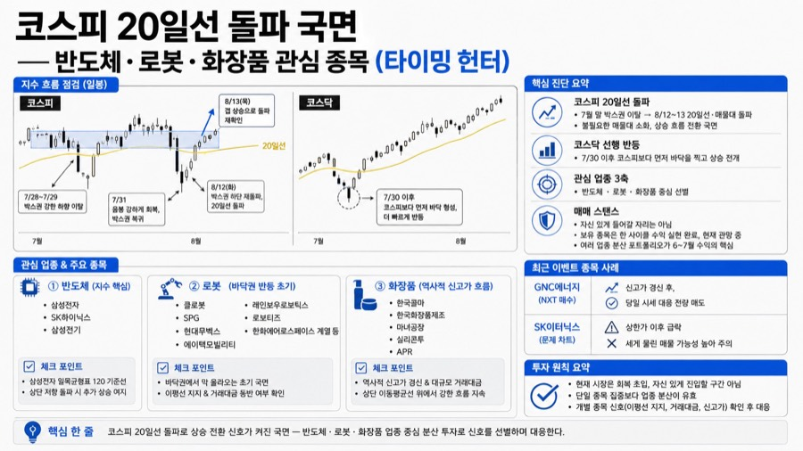
코스피 20일선 돌파 국면 — 반도체·로봇·화장품 관심 종목 (타이밍 헌터)
- 코스피 8월 12~13일 20일선·매물대 돌파, 코스닥은 코스피보다 먼저 바닥 찍고 선행 상승
- 반도체·로봇·화장품 3개 업종 분산 제시, 삼성전자는 일목균형표 120선 저항 앞둔 상태
- 한국콜마는 거래대금 동반 신고가 지속, SK이터닉스는 신고가 후 급락해 주의 종목 분류
- 지금은 확신 갖고 진입할 자리 아니라 평가, 단일종목 집중보다 업종 분산이 수익 핵심
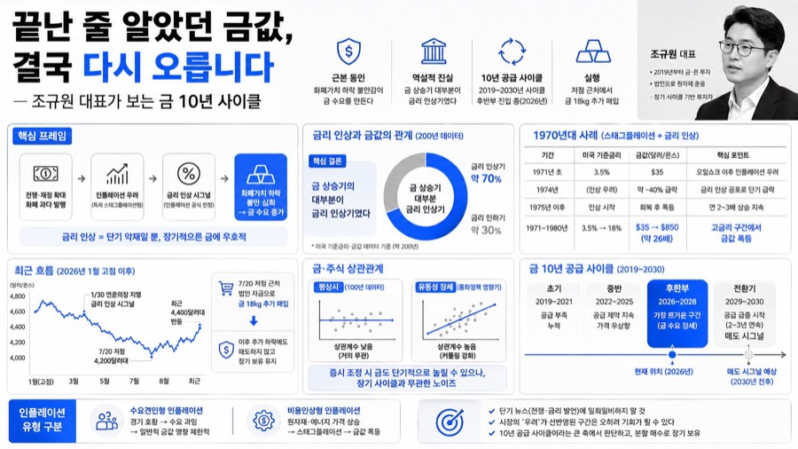
끝난 줄 알았던 금값, 결국 다시 오릅니다 — 조규원 대표가 보는 금 10년 사이클
- 화폐가치 하락 불안감이 금값의 근본 동인, 전쟁·인플레·금리는 매개 요인일 뿐
- 금리 인상이 금 악재라는 통념 반박, 200년 데이터상 금 상승기 대부분이 금리 인상기
- 4,200달러대 저점서 법인 자금으로 금 18kg 추가 매입, 이후 하락에도 장기 관점 유지
- 금은 공급 좌우 10년 주기 사이클, 2019~2030년 사이클 후반부 진입으로 진단
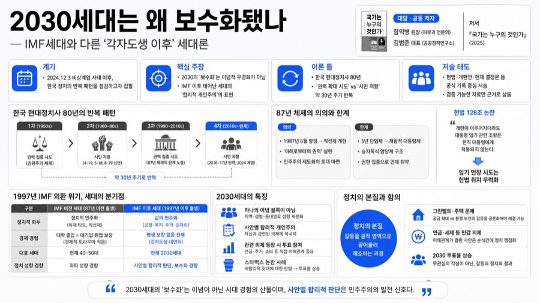
2030세대는 왜 보수화됐나 — IMF세대와 다른 '각자도생 이후' 세대론
- 2030 보수화는 이념적 우경화가 아니라 IMF 이후 세대 특유의 합리적 개인주의로 진단
- 1997년 IMF 외환위기 기점으로 정치 화두가 '민주화'에서 '삶의 민주화'로 전환
- 2030은 단일 이념 집단 아닌 지역·성별·의제별 세분화된 투표 성향을 보인다고 분석
- 헌법 128조 관련 임기연장 개헌 논란을 87년 체제 권력연장 시도 패턴으로 경계
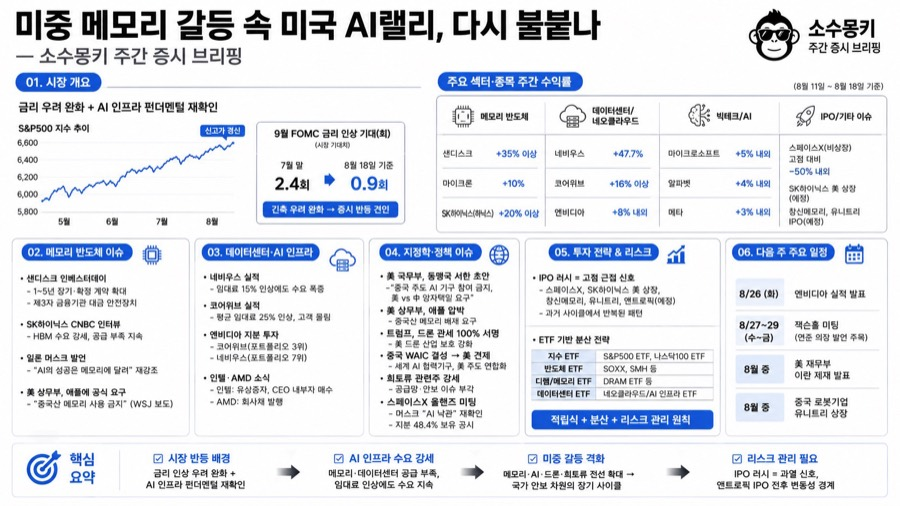
미중 메모리 갈등 속 미국 AI랠리, 다시 불붙나 — 소수몽키 주간 증시 브리핑
- S&P500 신고가 경신, 금리 인상 우려 완화 속 메모리·데이터센터주 강한 반등 주도
- 미 상무부, 애플에 중국산 메모리 사용 금지 공식 요구, 미중 기술패권 갈등 격화
- 네비우스 47.7%·코어위브 16% 급등, 임대료 인상에도 데이터센터 수요 몰리는 구조 확인
- 스페이스X 등 IPO 러시를 과거 고점 신호로 해석, 연내 앤트로픽 IPO를 정점 후보로 지목
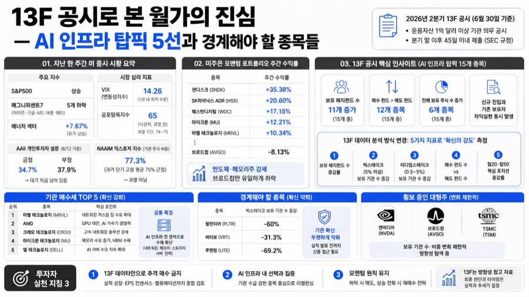
13F 공시로 본 월가의 진심 — AI 인프라 탑픽 5선과 경계해야 할 종목들
- 2분기 13F 공시 분석, 헤지펀드는 조정 직전에도 AI 인프라 이탈 안 해 15개 중 11개 증가
- 기관 매수세 최강은 마벨·AMD·크레도·마이크론·델, GPU 집중에서 인프라 전반으로 확산
- 팔란티어는 빅스테이크 -60%, 헤지펀드가 바닥에서 손절한 뒤 주가 약 50% 폭등 사례
- 13F만으로 추격매수 말고 실적·EPS 컨센서스·밸류에이션까지 함께 확인해야 한다는 결론

월가가 채권금리로 증시를 하락시키는 이유
- 전인구경제연구소 채널의 시황 브리핑 영상. 당일 급락 배경을 채권 금리 급등이라는 단일 지표로 설명하고, 그 원인에 대한 저자 개…
- 코스피는 장중 7,100 돌파 후 오히려 -1.5%로 하락 마감, 일본 증시 -2.45%, 나스닥 선물도 오후 들어 -1% 이상…
- 미국채 30년물 금리가 5.32%까지 올라 2007년 이후 최고 수준을 기록했다. 10년물은 4.74%다.
- CPI·PPI가 안정적으로 나오고 유가도 낮았는데도 채권 금리가 급등해, 물가 지표와 금리가 따로 노는 비정상적 흐름이 나타났다.
변동성 심한 주식형 연금계좌, 은퇴 전 안전하게 갈아타는 '연금 환승' 전략
- 전인구경제연구소 채널의 "연금술사" 코너. 55세 직장인의 실제 사연(주식형 연금저축 4억 원, 하루 3천만 원씩 등락)을 바탕으…
- 55세 직장인이 주식형 연금저축에서 4억 원 이상 수익을 냈지만 하루 3천만 원씩 오르내리는 변동성 때문에 불안해하며 대처 방법을…
- ① 펀드 변경(같은 계좌 내 상품 교체) ② 연금 이전(금융기관 간 계좌 이동, 55세 미만도 가능) ③ 연금 환승(55세 이상만…
- 55세 이상, 당장 목돈이 필요 없을 것, 10년 이상 묶어둘 수 있을 것.

표현하지 않으면 아무도 모른다, 미주은이 말하는 프레젠테이션의 기술
- 미국주식으로 은퇴하기(미주은) 채널 진행자가 자신의 호텔리어·유튜버 경력을 근거로 프레젠테이션(자기표현) 스킬의 중요성을 설파하는…
- "내면이 중요하다"는 말은 맞지만, 표현하지 않는 내면을 남이 알아서 이해해 줄 방법은 없다 , 표현 능력 자체가 행복하고 성공…
- 진행자는 21년 직장 생활에서 실력은 뛰어나도 표현이 서툴러 인정과 승진이 더뎠던 동료들을 다수 목격했고, 반대로 본인은 가진 능…
- 미주은 채널의 성공도 투자 역량 자체보다 프레젠테이션 스킬이 크게 기여했다고 진행자는 평가한다.

엔비디아 반도체 담보 대출 등장 — 5,000억 달러 AI 금융화, 광기의 조짐인가
- 소수몽키 채널의 경제·투자 브리핑 영상. 엔비디아의 신규 자금 조달 방식과 그에 대한 낙관론·비관론, CNBC의 빅쇼트 실존 인물…
- 엔비디아가 월가 6개 금융사와 협약을 맺고 반도체·컴퓨팅 자산을 담보로 사상 최대 규모인 5,000억 달러(원화 약 600~700…
- 반도체·컴퓨팅 자산을 담보로 한 대출(이른바 "칩담대"·"컴담대") , 데이터센터를 담보로 한 자산유동화증권(ABS)을 통해 민…
- 젠슨 황은 CUDA 소프트웨어 업데이트로 구형 반도체도 오래 쓸 수 있어 안정적 담보자산이라 주장, 2020년산 A100급 칩도…

반감기로 힘 빠진 비트코인 채굴 기업들, 남는 전력을 AI에 팔아 다시 황금기
- '상자 채굴 매매법' 시리즈 2편(오프라인 강의 예고편). 1편(중국의 채굴 전면 금지·미국으로의 해시레이트 이동)에 이어지는 스…
- 2024년 비트코인 반감기로 채굴 보상이 절반으로 줄면서 나스닥 상장 채굴 기업들의 수익성이 급격히 나빠졌다.
- 같은 시기 구글·마이크로소프트·엔비디아가 이끈 AI 붐으로 전력·컴퓨팅 수요가 폭증했고, 채굴 기업이 이미 갖고 있던 전력 인프라…
- 다수의 채굴 기업이 비트코인 채굴 대신(또는 병행해) AI 데이터센터 사업으로 전환, 확보한 전기를 AI 기업에 장기 임대 계약으…

실적시즌 끝, 반도체 다음은 다 같이 랠리? 바텍·오스코텍·잉글우드랩 점검
- 슈퍼개미 이세무사TV(밸런스 투자 아카데미 '홈런왕'), 3일 만에 복귀한 모닝 라이브 브리핑
- 8월 14일로 국내 실적시즌이 마감됐고, 훑어본 기업 열 곳 중 여덟아홉 곳이 흑자전환 또는 전년 대비 영업이익 증가를 기록해 반…
- 전날 미국장은 약보합 마감했으나 국내 장에는 큰 영향 없을 것으로 판단, 한국투자증권의 미국 전략 리포트(S&P500 12개월 밴…
- 반도체(1순위) 다음으로 반도체 소부장·뷰티·의료(제약바이오 포함)·로봇·금융·전력기기·통신장비·에너지·지주사 순으로 관심

코스피 7천 터치 후 음선 마감, 박스권 고점에서는 흥분 금지
- 슈퍼개미 이세무사TV. 주식 교육 기관 '밸런스자 아카데미' 대표가 매일 장 마감 후 시황을 정리하는 라이브 방송
- 코스피가 갭으로 7,127포인트 출발, 장중 고점 7,200(+3.42%)까지 갔다가 음선으로 전환해 6,869로 마감(전일 대비…
- -3.52% 하락, 코스피보다 더 크게 빠짐
- 연휴 전부터 유지해온 '단기 박스권' 뷰를 그대로 유지. 저점 5,500 부근은 매수, 7천 근접·돌파는 매도 관점이 여전히 유효

장기금리 쇼크에 코스피 1.5% 급락, 삼성전자·SK하이닉스도 흔들, 분할매매로 버텨라
- 슈퍼개미 이세무사TV(몽당연필)의 8월 18일(화) 장중·장마감 라이브 방송. 실시간 채팅 질문에 답하며 그날 시장을 해석하고 매…
- 코스피가 장중 -3.42%에서 종가 -1.5%(6,869)로 마감, 하루 변동폭이 약 4%에 달했다. 시가총액 상위주(삼성전자·S…
- 미국 10년물 금리 4.7%대, 30년물 5.3%대까지 상승하고 일본 장기물 금리도 오름세를 타면서, 이번 주 FOMC 의사록과…
- 외국인이 오전에 코스피 현물을 조 단위로 순매수하다가 9시 40분경 순간적으로 매도 전환하며 삼성전자(장중고점 28만8,000원)…

40조 호재 뜬 SK하이닉스…주가를 누른 건 반도체 악재가 아닌 '금리
- 삼프로TV '여의도scv' 코너, 홍선애 앵커와 박병창 MP파트너스 대표의 시황 대담
- 홍선애(진행), 박병창(MP파트너스 대표)
- 이날 코스피 급락의 원인이 반도체 개별 악재가 아니라 미국·일본 등 주요국 장기 국채금리 급등이라는 매크로 요인이며, 이를 구분해…
- 미국 30년물 국채금리 5.33% 돌파(19년 만 최고), 이는 국가부채·빅테크 회사채 발행 증가 등이 복합적으로 작용한 결과…

코스닥 앞으로 이 업종을 사세요 (ft.김장열 센터장 2부)
- 전인구경제연구소의 대담 코너 2부. 김장열 센터장이 진행자와 함께 최근 코스닥 급등의 원인과 하반기 업종별 대응 전략을 논의한다.
- 김장열(센터장), 전인구경제연구소 진행자
- 삼성전자·SK하이닉스가 마이크론 대비 밸류에이션 디스카운트를 겪으며 급락한 사이, 회피 자금이 코스닥(화장품·2차전지·소부장 등)…
- 코스닥 상승은 삼성전자·하이닉스 회피 수급이 원인이며, 화장품·조선·2차전지·소부장·건설(원전 테마 포함)로 자금이 분산됐다. 7…

SK하이닉스 40조 자사주 매입, 소각은 시작일 뿐입니다
- 전인구경제연구소의 단독 시황 해설 영상. 진행자가 SK하이닉스의 자사주 매입·소각 발표를 분석한다.
- 전인구경제연구소 진행자
- SK하이닉스가 국내 최대 규모(40조 원)의 자사주 매입·소각을 발표한 것이 단순한 주가 부양책을 넘어 코리아 디스카운트(한국 증…
- 40조 원 자사주 매입·소각은 "애피타이저"에 불과하며, 향후 3년간 잉여현금흐름(FCF)의 50% 이상을 주주환원하기로 해 3년…

미 국채 금리 19년만 최고! 미국 주식 탈출 시그널?! (미주은의 미국주식 인사이트)
- 유튜브 채널 '미국주식으로 은퇴하기(미주은)'의 정기 시황 방송(8월 19일자). 진행자 미주은이 시청자 질문 답변, 개별 종목…
- 미주은(진행자, 모멘텀 투자 전략가), 에드 야데니(야데니 리서치 회장, '채권 파수꾼' 용어 창시자)
- 미국 30년물 국채 금리가 19년 만에 최고 수준(5.3%대)까지 급등한 상황에서, 이것이 폭락장의 전조인지 아니면 AI 인프라…
- ① 시청자 질문에 답한 광통신주(루멘텀·코히어런트·AAOI) 퀀트 분석 사례 ② 국채 금리 급등의 일시적 요인(유가·지정학)과 구…

월가 초고수들은 뭘 사고 뭘 팔았을까, 동시에 찍은 주식들의 공통점
- 소수몽키 채널의 분기별 정기 코너. 3개월마다 주요 기관투자자의 13F 공시(2분기 4~6월 기준)를 분석해 공유한다.
- 소수몽키(진행자, 약 20개 주요 기관 공시를 상시 모니터링)
- 2분기 공시 기준 대다수 기관이 종목수·자산 규모를 늘리며 낙관적으로 매매했는데, 어떤 공통된 베팅 패턴이 있는지, 그리고 7~8…
- 워런 버핏(버크셔 해서웨이), 스탠리 드러켄밀러, 레오폴드 애셴브레너(월가 천재), 빌 애크먼(비크먼), 엔비디아, 알파벳 등 6…

7천에선 팔고, 6천에서는 기회보기. 지금은 상승장이 아닌 '박스권
- 슈퍼개미 이세무사TV의 일일 장 마감 브리핑. 진행자가 당일 지수 흐름과 탑다운(지수→업종→종목) 분석을 전달한다.
- 이세무사(슈퍼개미 이세무사TV 대표)
- 코스피가 5%대 급락한 날, "지금은 상승장이 아니라 박스권"이라는 기존 전략이 다시 유효했음을 복기하고, 향후에도 7천 근처에서…
- 6월 19일까지 상승장 → 7월 28일까지 하락장(5,500 붕괴) → 이후 박스 조정장(6천~7천)이라는 3단계 시황 진단. 오…

홈런왕의 모닝브리핑 — 조정장 시작인가? 삼양식품·하나마이크론·기가비스 보고서 브리핑
- 밸런스 투자 아카데미 '홈런왕'이 진행하는 실시간 모닝 마켓 브리핑 라이브 방송(2026년 8월 19일자).
- 홈런왕(밸런스 투자 아카데미 진행자)
- 전날 미국 증시에서 지수 하락폭은 크지 않았지만 히트맵상 반도체 업종만 유독 크게 빠진 점이 한국 증시에 미칠 영향과, 조정장 국…
- 미국 반도체 업종 집중 하락과 국채금리 급등에 따른 조정장 진단, 유가·엔화·원화 환율 동향, 남북·지정학 테마주에 대한 경계…

콜라 한 캔이 건강식품으로? '기능성 음료 전쟁' — 현대약품·광동제약·일동제약
- 슈퍼개미 이세무사TV의 산업 이야기 대담 코너. 이정윤 세무사와 '정보의 바다' 연구원이 미국 음료 산업의 지각변동을 주제로 대화한다.
- 이정윤(세무사, 진행자), 정보의 바다(주식 분석 연구원)
- 미국에서 '건강한 탄산음료'로 불리는 프리바이오틱 소다 시장이 급성장하면서, 대형 식품기업이 신생 브랜드를 거액에 인수하는 지각변…
- 펩시코가 프리바이오틱 소다 브랜드 파피를 약 20억 달러에 인수한 배경, 경쟁 브랜드 올리팝의 성장 전략, GLP-1 비만치료제…

[LIVE] 몽당연필 : 삼성전자, SK하이닉스, SK스퀘어, 삼성전기, OCI홀딩스, 농심, S-OIL 등
- '몽당연필'(슈퍼개미 이세무사TV)의 장 마감 후 실시간 라이브 방송, 시청자 채팅과 투표(질문)를 섞은 진행 방식
- 몽당연필(진행자, 세무사)
- 이날 코스피가 -5.8%까지 급락 마감한 직후 SK하이닉스가 프리캐시플로우의 50%를 자사주 매입·소각·배당으로 환원하겠다는 40…
- 코스피 -5.8%, 코스닥 -1.17%로 상대적으로 반도체 대형주 중심 매도. 개인은 5,000억대, 외국인·기관은 3.8조원대…
Daybreak · Youtube Brief · 2026. 08. 20. (목)